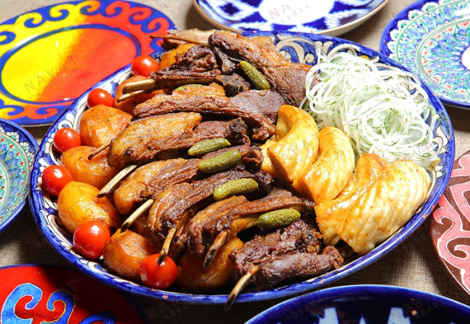

Pirojok

Central Asian dish with lamb and potatoes.
Ingredients
- Fresh Lamb
- Potatoes
- Onions
- Salt
- Olive oil
Steps
- Cook whole potatoes on olive oil until golden brown
- Take potatoes out of kazan
- Put pre-cut lamb to kazan and cook for 30 minutes
- Add potatoes back to kazan and close the lid. Put the heat to low and simmer for 1 hour